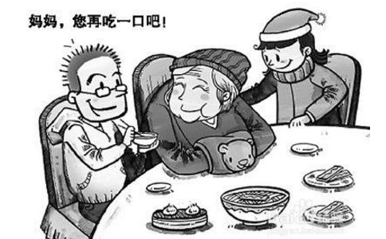

善待每一个长辈：父亲、母亲、公公、婆婆、岳父、岳母！朋友，人
媳妇说：“煮淡一点你就嫌没有味道，现在煮咸一点你却说咽不下，你究竟怎么样？”
母亲一见儿子回来，二话不说便把饭菜往咀里送。她怒瞪他一眼。他试了一口，马上吐出，儿子说：“我不是说过了吗，妈有病不能吃太咸！”
“那好！妈是你的，以后由你来煮！”媳妇怒气冲冲地回房。
儿子无奈地轻叹一声，然后对母亲说：“妈，别吃了，我去煮个面给你。”
“仔，你是不是有话想跟妈说，是就说好了，别憋在心里！”
“妈，公司下个月升我职，我会很忙，至于老婆，她说很想出来工作，所以……”
母亲马上
儿子沉默片刻，他是在寻找更好的理由。
“妈，其实老人院并没有甚么不好，你知道老婆一但工作，一定没有时间好好服侍你。老人院有吃有住有人服侍看顾，不是比在家里好得多吗？”
“可是，阿财叔他……”
洗了澡，草草吃了一碗方便面，儿子便到书房去。他茫然地伫立于窗前，有些犹豫不决。母亲年轻便守寡，含辛茹苦将他抚养成人，供他出国读书。但她从不用年轻时的牺牲当作要挟他孝顺的筹码，反而是妻子以
“可以陪你下半世的人是你老婆，难道是你妈吗？”阿财叔的儿子总是这样提醒他。
“你妈都这么老了，好命的话可以活多几年，为何不趁这几年好好孝顺她呢？树欲静而风不息，子欲养而亲不在啊！”亲戚总是这样劝他。
儿子不敢再想下去，深怕自己真的会改变初衷。傍晚，太阳收敛起灼热的金光，躲在山后憩息。一间建在郊外山岗的一座贵族老人院。是的，钱用得越多，儿子才心安理得。当儿子领着母亲步入大厅时，崭新的电视机，42吋荧幕正播放着一部喜剧，但观众一点笑声也没有。几个衣着一样，发型一样的老妪歪歪斜斜地坐在发沙上，神情呆滞而落寞。有个老人在自言自语，有个正缓缓弯下腰，想去捡起掉在地上的一块饼干。儿子知道母亲喜欢光亮，所以为她选了一间阳光充足的房间。从窗口望出去，树荫下，一片芳草如茵。几名护士推着坐在轮椅的老者在夕阳下散步，四周悄然寂静得令人心酸。纵有夕阳无限好，毕竟已到了黄昏，他心中低低叹息。
“妈，我……我要走了！”母亲只能点头。
他走时，母亲频频挥手，她张着没有牙的嘴，苍白干燥的咀唇在嗫嚅着，一副欲语还休的样子。儿子这才注意到母亲银灰色的头发，深陷的眼窝以及打着细褶的皱脸。
母亲，真的令他霍然记起一则儿时旧事。那年他才6岁，母亲有事回乡，不便携他同行，于是把他寄住在阿财叔家几天。母亲临走时，他惊恐地抱着母亲的腿不肯放，伤心大声号哭道：“妈妈不要丢下我！妈妈不要走！”最后母亲没有丢下他。
他连忙离开房间，顺手把门关上，不敢回头，深恐那记忆像鬼魅似地追缠而来。
他回到家，妻子与岳母正疯狂的把母亲房里的一切扔个不亦乐乎。身高3呎的奖杯——那是他小学作文比赛”我的母亲”第1名的胜利品！华英字典——那是母亲整个月省吃省用所买给他的第1份生日礼物！还有母亲临睡前要擦的风湿油，没有他为她擦，带去老人院又有甚么意义呢？
“够了，别再扔了！”儿子怒吼道。
“这么多垃圾，不把它扔掉，怎么放得下我的东西。”岳母没好气地说。
“就是嘛！你赶快把你妈那张烂床给抬出去，我明天要为我妈添张新的！”
一堆童年的照片展现在儿子眼前，那是母亲带他到动物园和游乐园拍的照片。
“它们是我妈的财产，一样也不能丢！”
“你这算甚态度？对我妈这么大声，我要你向我妈道歉！”
“我娶你就要爱你的母亲，为甚么你嫁给我就不能爱我的母亲？”
雨后的黑夜分外冷寂，街道萧瑟，行人车辆格外稀少。一辆宝马在路上飞驰，频频闯红灯，陷黄格，呼一声又飞驰而过。那辆轿车一路奔往山岗上的那间老人院，停车直奔上楼，推开母亲卧房的门。他幽灵似地站着，母亲正抚摸着风湿痛的双腿低泣。
她见到儿子手中正拿着那瓶风湿油，显然感到安慰的说：“妈忘了带，幸好你拿来！”他走到母亲身边，跪了下来。
“很晚了，妈自己擦可以了，你明天还要上班，回去吧！”
他嗫嚅片刻，终于忍不住啜泣道：“妈，对不起，请原谅我！我们回家去吧！”
随着自己愈长大，看着父母亲脸庞从年轻变憔悴，头发从乌丝变白发，动作从迅捷变缓慢，多心疼！父母亲总是将最好、最宝贵的留给我们，像蜡烛不停的燃烧自己，照亮孩子！而我呢？有没有腾出一个空间给我的父母，或者只是在当我需要停泊岸时，才会想起他们……其实父母亲要的真的不多，只是一句随意的问候“爸、妈，你们今天好吗？”随意买的宵夜，煮一顿再普通不过的晚餐，睡前帮他们盖盖被子，天冷帮他们添衣服、戴手套……都能让他们高兴温馨很久。有时，我常在想：我希望我的子女以后如何对我。那现在，我有没有如此对待我的父母？我相信，人是环环相扣的；现在，你如何对待你的父母；以后，你的子女就如何待你。朋友，人世间最难报的就是父母恩，愿我们都能：以反哺之心奉敬父母，以感恩之心孝顺父母！